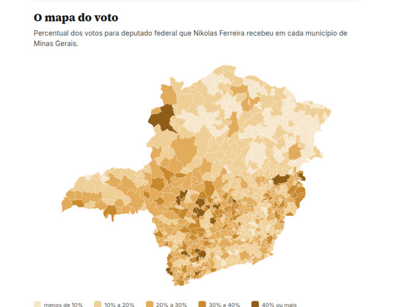
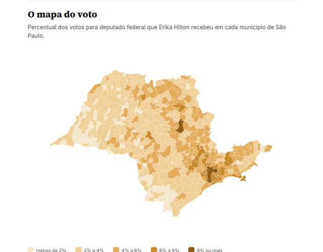

Raio-X eleitoral · Eleições 2026
De onde vieram os votos, cidade por cidade
Relatórios em PDF sobre qualquer candidato, município ou partido, feitos com os dados oficiais do TSE e conferidos um a um com a API oficial de resultados.
- Dados oficiais do TSE
- 100% dos municípios conferidos
- Sem opinião, sem lado
Veja dois exemplos completos
Um de cada lado do espectro político, com o mesmo método. Baixe e veja exatamente o que você recebe.

O que vem no Raio-X de um candidato
Tudo calculado direto dos arquivos oficiais, sem estimativas.
Mapa do voto
O percentual do candidato em cada município do estado, e quantas cidades em cada faixa.
Rankings
As cidades que deram mais votos e aquelas onde ele foi mais forte em percentual.
Regiões
Votos por região do estado e quanto do total veio das maiores cidades.
Capital por zona
A votação na capital dividida pelas zonas eleitorais.
Peso no partido
Quanto dos votos do partido no estado foram do candidato.
Auditoria
Cada município conferido com a API oficial de resultados do TSE, com o método explicado.
Precisa de outra coisa?
Também fazemos relatórios sob medida com os dados oficiais: como votou um município em todos os cargos, o desempenho de um partido no estado, comparações entre candidatos e outros recortes. Descreva o que precisa no pedido.
Como funciona
Sem cadastro e sem complicação.
- Faça o pedidoPreencha o formulário dizendo o que precisa.
- Receba o orçamentoRespondemos por e-mail com preço e prazo, em até 1 dia útil.
- Pague por PixE envie o comprovante respondendo o e-mail.
- Receba o PDFO relatório chega no seu e-mail, conferido e com as fontes.
O que o Raio-X não faz
- Não identifica como pessoas votaram. O voto é secreto, e os dados são totais por município, zona ou seção.
- Não dá recomendação de estratégia de campanha. Mostra os números, e a leitura é sua.
- Não usa pesquisas nem estimativas: só os resultados oficiais e públicos do TSE.
- Tem o mesmo método e as mesmas condições para qualquer candidato ou partido.
Quer o Raio-X do seu candidato?
Peça agora e receba o orçamento por e-mail.